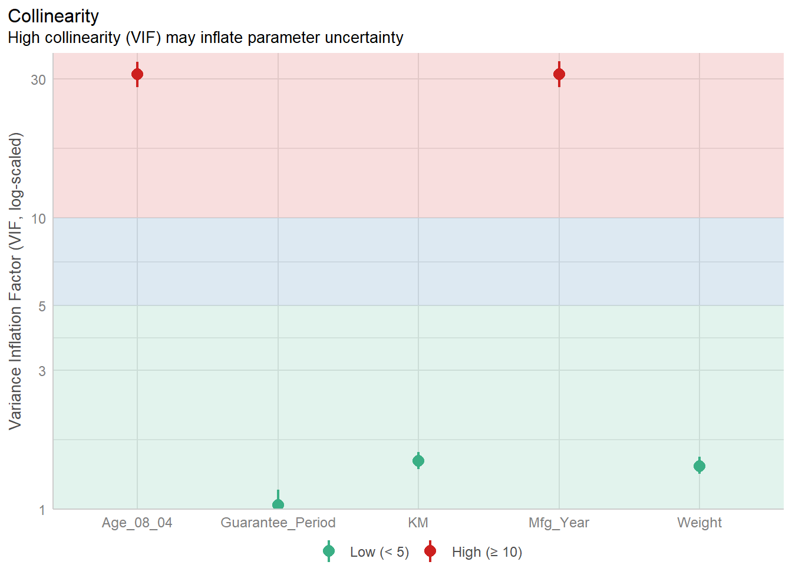
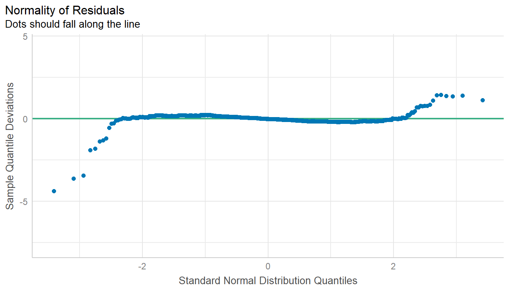
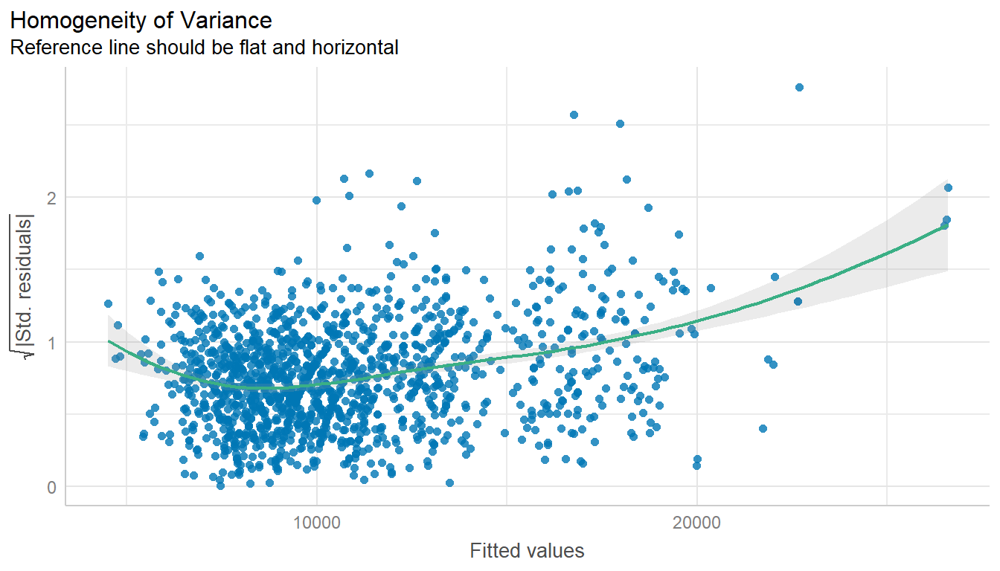
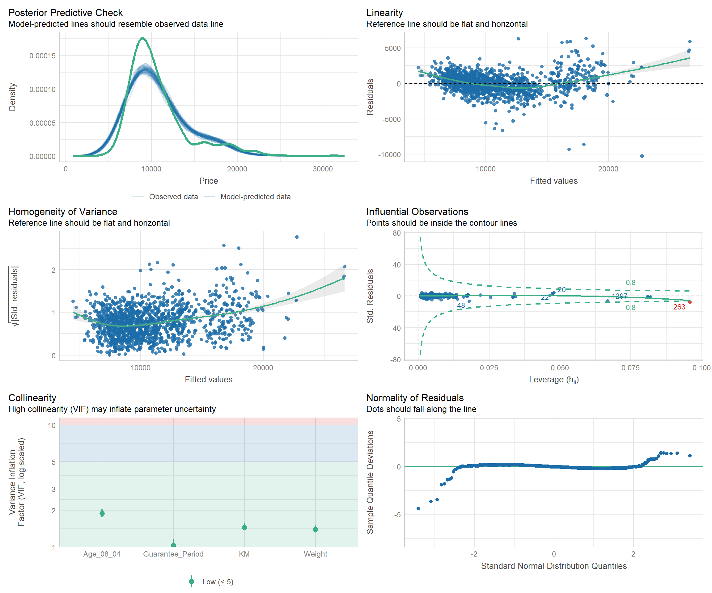
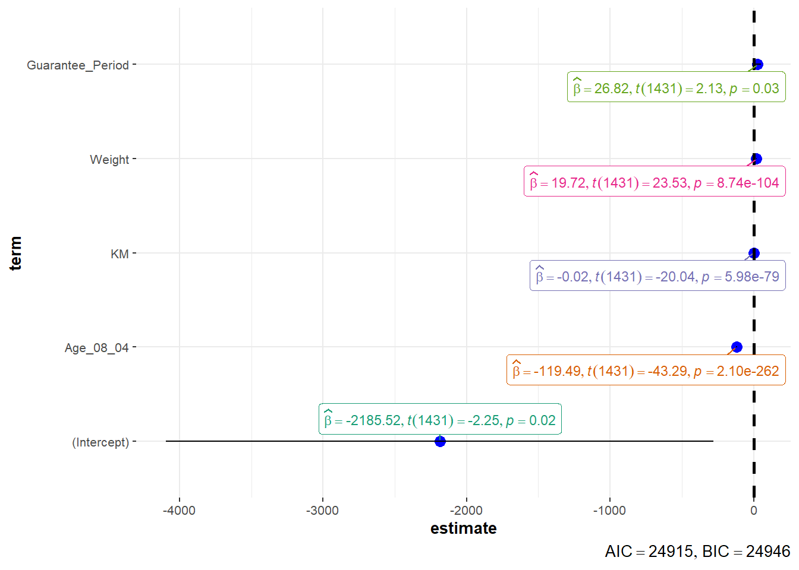

pacman::p_load(readxl, SmartEDA, tidyverse,
ggstatsplot, easystats, tidymodels)12 Visualising Models
12.1 Introduction
In this section, you will learn how to visualise model diagnostic and model parameters by using parameters package.
12.2 Visual Analytics for Building Better Explanatory Models
12.2.1 The case
Toyota Corolla case study will be used. The purpose of study is to build a model to discover factors affecting prices of used-cars by taking into consideration a set of explanatory variables.
12.3 Getting Started
12.4 Installing and loading the required libraries
Do-It-Yourself
12.4.1 Importing Excel file: readxl methods
In the code chunk below, read_xls() of readxl package is used to import the data worksheet of ToyotaCorolla.xls workbook into R.
car_resale <- read_xls("data/ToyotaCorolla.xls",
"data")
car_resale# A tibble: 1,436 × 38
Id Model Price Age_08_04 Mfg_Month Mfg_Year KM Quarterly_Tax Weight
<dbl> <chr> <dbl> <dbl> <dbl> <dbl> <dbl> <dbl> <dbl>
1 81 TOYOTA … 18950 25 8 2002 20019 100 1180
2 1 TOYOTA … 13500 23 10 2002 46986 210 1165
3 2 TOYOTA … 13750 23 10 2002 72937 210 1165
4 3 TOYOTA… 13950 24 9 2002 41711 210 1165
5 4 TOYOTA … 14950 26 7 2002 48000 210 1165
6 5 TOYOTA … 13750 30 3 2002 38500 210 1170
7 6 TOYOTA … 12950 32 1 2002 61000 210 1170
8 7 TOYOTA… 16900 27 6 2002 94612 210 1245
9 8 TOYOTA … 18600 30 3 2002 75889 210 1245
10 44 TOYOTA … 16950 27 6 2002 110404 234 1255
# ℹ 1,426 more rows
# ℹ 29 more variables: Guarantee_Period <dbl>, HP_Bin <chr>, CC_bin <chr>,
# Doors <dbl>, Gears <dbl>, Cylinders <dbl>, Fuel_Type <chr>, Color <chr>,
# Met_Color <dbl>, Automatic <dbl>, Mfr_Guarantee <dbl>,
# BOVAG_Guarantee <dbl>, ABS <dbl>, Airbag_1 <dbl>, Airbag_2 <dbl>,
# Airco <dbl>, Automatic_airco <dbl>, Boardcomputer <dbl>, CD_Player <dbl>,
# Central_Lock <dbl>, Powered_Windows <dbl>, Power_Steering <dbl>, …Notice that the output object car_resale is a tibble data frame.
12.4.2 Visualising modelling variables
ExpCatStat(car_resale,
Target = "Price",
result = "Stat") Variable Target Unique Chi-squared p-value df IV Value Cramers V
1 HP_Bin Price 3 1127.688 0.000 NA 0 0.63
2 CC_bin Price 3 685.764 0.000 NA 0 0.49
3 Fuel_Type Price 3 565.438 0.146 NA 0 0.44
4 Color Price 10 2022.674 0.547 NA 0 0.40
5 Mfg_Year Price 7 4656.163 0.000 NA 0 0.74
6 Guarantee_Period Price 9 3761.179 0.031 NA 0 0.57
7 Doors Price 4 569.472 0.524 NA 0 0.36
8 Gears Price 4 247.619 0.964 NA 0 0.24
9 Met_Color Price 2 265.969 0.029 NA 0 0.43
10 Automatic Price 2 250.795 0.333 NA 0 0.42
11 Mfr_Guarantee Price 2 303.903 0.000 NA 0 0.46
12 BOVAG_Guarantee Price 2 367.755 0.000 NA 0 0.51
13 ABS Price 2 367.799 0.000 NA 0 0.51
14 Airbag_1 Price 2 165.812 0.876 NA 0 0.34
15 Airbag_2 Price 2 302.078 0.000 NA 0 0.46
16 Airco Price 2 480.768 0.000 NA 0 0.58
17 Automatic_airco Price 2 975.682 0.000 NA 0 0.82
18 Boardcomputer Price 2 808.774 0.000 NA 0 0.75
19 CD_Player Price 2 630.746 0.000 NA 0 0.66
20 Central_Lock Price 2 355.102 0.000 NA 0 0.50
21 Powered_Windows Price 2 352.223 0.000 NA 0 0.50
22 Power_Steering Price 2 138.458 0.930 NA 0 0.31
23 Radio Price 2 261.537 0.141 NA 0 0.43
24 Mistlamps Price 2 309.494 0.000 NA 0 0.46
25 Sport_Model Price 2 413.772 0.000 NA 0 0.54
26 Backseat_Divider Price 2 270.482 0.034 NA 0 0.43
27 Metallic_Rim Price 2 309.046 0.000 NA 0 0.46
28 Radio_cassette Price 2 262.076 0.144 NA 0 0.43
29 Tow_Bar Price 2 233.007 0.525 NA 0 0.40
30 Id Price 10 3964.615 0.000 NA 0 0.55
31 Price Price 10 12924.000 0.000 NA 0 1.00
32 Age_08_04 Price 10 3945.785 0.000 NA 0 0.55
33 Mfg_Month Price 9 1847.852 0.721 NA 0 0.40
34 KM Price 10 2765.331 0.000 NA 0 0.46
35 Quarterly_Tax Price 4 1248.004 0.000 NA 0 0.54
36 Weight Price 9 2724.643 0.000 NA 0 0.49
Degree of Association Predictive Power
1 Strong Not Predictive
2 Strong Not Predictive
3 Strong Not Predictive
4 Strong Not Predictive
5 Strong Not Predictive
6 Strong Not Predictive
7 Strong Not Predictive
8 Moderate Not Predictive
9 Strong Not Predictive
10 Strong Not Predictive
11 Strong Not Predictive
12 Strong Not Predictive
13 Strong Not Predictive
14 Strong Not Predictive
15 Strong Not Predictive
16 Strong Not Predictive
17 Strong Not Predictive
18 Strong Not Predictive
19 Strong Not Predictive
20 Strong Not Predictive
21 Strong Not Predictive
22 Strong Not Predictive
23 Strong Not Predictive
24 Strong Not Predictive
25 Strong Not Predictive
26 Strong Not Predictive
27 Strong Not Predictive
28 Strong Not Predictive
29 Strong Not Predictive
30 Strong Not Predictive
31 Strong Not Predictive
32 Strong Not Predictive
33 Strong Not Predictive
34 Strong Not Predictive
35 Strong Not Predictive
36 Strong Not Predictive12.4.3 Multiple Regression Model using lm()
The code chunk below is used to calibrate a multiple linear regression model by using lm() of Base Stats of R.
model <- lm(Price ~ Age_08_04 + Mfg_Year + KM +
Weight + Guarantee_Period, data = car_resale)
model
Call:
lm(formula = Price ~ Age_08_04 + Mfg_Year + KM + Weight + Guarantee_Period,
data = car_resale)
Coefficients:
(Intercept) Age_08_04 Mfg_Year KM
-2.637e+06 -1.409e+01 1.315e+03 -2.323e-02
Weight Guarantee_Period
1.903e+01 2.770e+01 12.4.4 Model Diagnostic: checking for multicolinearity:
In the code chunk, check_collinearity() of performance package.
check_collinearity(model)# Check for Multicollinearity
Low Correlation
Term VIF VIF 95% CI Increased SE Tolerance Tolerance 95% CI
KM 1.46 [ 1.37, 1.57] 1.21 0.68 [0.64, 0.73]
Weight 1.41 [ 1.32, 1.51] 1.19 0.71 [0.66, 0.76]
Guarantee_Period 1.04 [ 1.01, 1.17] 1.02 0.97 [0.86, 0.99]
High Correlation
Term VIF VIF 95% CI Increased SE Tolerance Tolerance 95% CI
Age_08_04 31.07 [28.08, 34.38] 5.57 0.03 [0.03, 0.04]
Mfg_Year 31.16 [28.16, 34.48] 5.58 0.03 [0.03, 0.04]check_c <- check_collinearity(model)
plot(check_c)
12.4.5 Model Diagnostic: checking normality assumption
In the code chunk, check_normality() of performance package.
model1 <- lm(Price ~ Age_08_04 + KM +
Weight + Guarantee_Period, data = car_resale)check_n <- check_normality(model1)plot(check_n)
12.4.6 Model Diagnostic: Check model for homogeneity of variances
In the code chunk, check_heteroscedasticity() of performance package.
check_h <- check_heteroscedasticity(model1)plot(check_h)
12.4.7 Model Diagnostic: Complete check
We can also perform the complete by using check_model().
check_model(model1)
12.4.8 Visualising Regression Parameters: see methods
In the code below, plot() of see package and parameters() of parameters package is used to visualise the parameters of a regression model.
plot(parameters(model1))12.4.9 Visualising Regression Parameters: ggcoefstats() methods
In the code below, ggcoefstats() of ggstatsplot package to visualise the parameters of a regression model.
ggcoefstats(model1,
output = "plot")